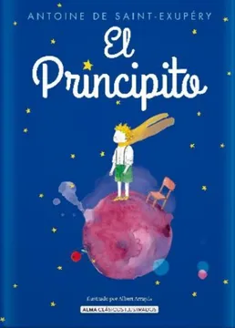

Formato: Libro físico
Autor: Antoine De Saint-Exupery
Editorial: Alma
Categoría: Literatura juvenil
Año: 2020
Idioma: Español
N°páginas: 112
Encuadernación: Pasta dura
Precio de venta: $8.930
DESCRIPCIÓN
En este libro, un aviador —Saint-Exupéry lo fue— se encuentra perdido en el desierto del Sahara, después de haber tenido una avería en su avión. Entonces aparece un pequeño príncipe. En sus conversaciones con él, el narrador revela su propia visión sobre la estupidez humana y la sencilla sabiduría de los niños que la mayoría de las personas pierden cuando crecen y se hacen adultos. El relato viene acompañado por ilustraciones dibujadas por el autor. El principito vive en un pequeño planeta, el asteroide B 612, en el que hay tres volcanes (dos de ellos activos y uno no) y una rosa. Pasa sus días cuidando de su planeta, y quitando los árboles baobab que constantemente intentan echar raíces allí. De permitirles crecer, los árboles partirían su planeta en pedazos. Un día decide abandonar su planeta, quizás cansado de los reproches y reclamos de la rosa, para explorar otros mundos. Aprovecha una migración de pájaros para emprender su viaje y recorrer el universo; es así como visita seis planetas, cada uno de ellos habitado por un personaje: un rey, un vanidoso, un borracho, un hombre de negocios, un farolero y un geógrafo, los cuales, a su manera, demuestran lo vacías que se vuelven las personas cuando se transforman en adultas.